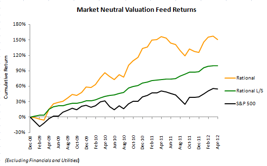

Heuristics
The only available system to use heuristics rather than statistical tools.
Standardized
Completely standardized across all sectors and market caps

How It Works
The system uses the yield curve as well as the specific circumstances of each firm in its valuation in a manner not possible with regression and ratio based filtering.

Artificial Intelligence A quantum leap from the current state of the art.
- Based on research on fundamental factors and the impact of the yield curve on equity valuation conducted by Fama and French
- We go beyond CFROI, statistical modeling, and principal components analysis to execute a logical tree in a fashion that an experienced human analyst would.
- We incorporate macroeconomic risks when testing our results for a fit across the entire U.S. equity market, not just a handful of names in a sector a typical analyst would have experience in.

For Our Clients A Tailored User Experience
- We support our models with a variety of screens based on investment style.
- We offer additional analysis extracted from footnotes of SEC filings such as mineral reserves, ownership information, pension liabilities, etc. or from integration with third party data sources.
Our Product's Edge
We have a unique understanding of the path of equity prices in the medium term, calibrated using an institutional size real money portfolio, as well as a transparent interface.